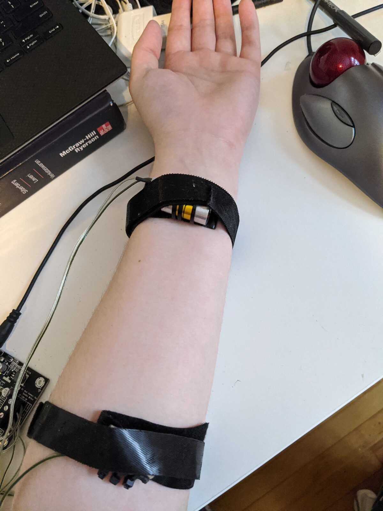
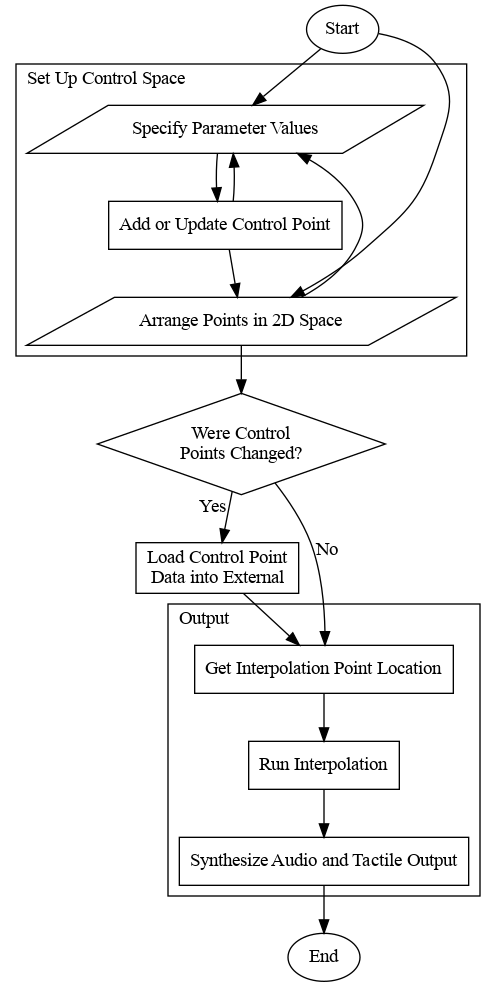
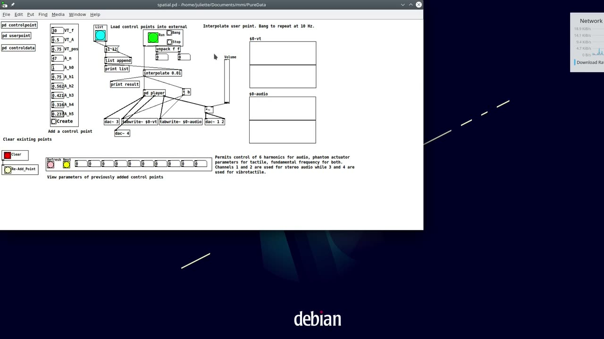
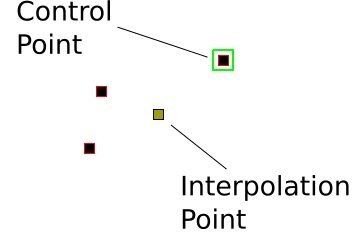

Interpolating Audio and Haptic Control Spaces
Abstract
Audio and haptic sensations have previously been linked in the development of NIMEs and in other domains like human-computer interaction. Most efforts to work with these modalities together tend to either treat haptics as secondary to audio, or conversely, audio as secondary to haptics, and design sensations in each modality separately. In this paper, we investigate the possibility of designing audio and vibrotactile effects simultaneously by interpolating audio-haptic control spaces. An inverse radial basis function method is used to dynamically create a mapping from a two-dimensional space to a many-dimensional control space for multimodal effects based on user-specified control points. Two proofs of concept were developed focusing on modifying the same structure across modalities and parallel structures.
Introduction
Audio and haptic sensory experiences appear in various devices and interactions with distinctions between the tactile and kinesthetic submodalities. Tactile sensations, like vibration, occur in the skin while kinesthetic sensations are caused by movement and force. Acoustic musical instruments necessarily produce both tactile and kinesthetic feedback through intrinsic physical features, but so too is intentional tactile feedback important in the design and use of digital musical instruments (DMIs) [1][2]. In the broader realm of NIMEs, interfaces with a vibrotactile component exist and have reported a different experience compared to audio alone [3][4][5][6][7]. Translation algorithms have been developed that process an audio file to create an accompanying vibrotactile component [8][9][10].
This paper investigates simultaneous design of audio and vibrotactile effects through the use of radial basis function interpolation as a means of treating the modalities equally. This is done to better understand the role of a designer’s approach to multimodal effect and experience creation. Two proofs of concept were implemented to treat audio and vibrotactile effect synthesis as independent and equal sensory components. One system is used to control the same feature multimodally while the other uses different features connected through metaphor.
Background
Haptic feedback in the form of vibration can be constructed like audio, but the tactile sense differs from the auditory sense, for example in how frequency is perceived. [1][11][12][13]. However as with audio, illusions are often used to design more complex effects. For example, the common “sensory funnelling illusion” or “phantom actuator illusion” results in separate stimuli being perceived as occurring at a point between them [14][15][16][17]. DMIs can benefit from the addition of haptic feedback to provide information to a performer that cannot be gained through audition, vision, and proprioception alone [1]. Vibrotactile feedback is common in contactless DMIs, however it is also important in DMIs that require physical contact — and thus kinesthetic feedback — for normal use [8][18]. While some vibrotactile tools support the inclusion of audio, these expect audio to be completed and primarily aid in synchronization tasks [19][20][21]. This is part of a common trend among existing approaches to design separate audio and tactile design.
In musical applications, design of the audio component typically precedes the tactile component. The tactile component is then designed independently or through a causal link in the case of translation algorithms. They are then combined after the fact with revision when necessary. This may differ in a few cases, as projects such as CORDIS-ANIMA [18] and DIMPLE [22] simultaneously consider haptics and audio and the recent MSCI Platform actually computes both audio and haptics synchronously [23].
With respect to control, the use of interpolation from a two- to a many-dimensional space has already been used successfully in music [24]. The space metaphor, with closeness representing similarity between points, has shown itself to be flexible in use and easy for users to understand.
Methodology
Radial Basis Function Interpolation
In the approach described by Amorim et al. [25], set of -dimensional points are used to characterize the resulting interpolation function. Each point has a corresponding location ∈R2 where closeness indicates similarity. A radial basis function, in our case the Gaussian function where is shape, is used to define a mapping →Rm where for any point its corresponding point in the control space can be calculated as:
where the ∈Rm are weights for the th index of the vector given by the th control point. The weights for each function (p) can be determined by solving
where are the th index of the control points. As such, the weights necessary for can be found by solving systems of equations.
System Architecture
A library1 to solve the instances of Equation 2 and calculate was written in C++ using the Eigen2 library. The library uses two namespaces for its contents: Interpol for generic interpolation resources and Interpol::Gaussian for resources specific to use with a Gaussian radial basis function to permit future support of other radial basis functions. Vectors and two-dimensional locations were paired in the ControlPoint structure and functions were written to calculate the interpolation matrix, weight parameters and determine . These were wrapped into an external for Pure Data written using Flext3 where the interpolate object, initialized with the shape parameter , performs the entire process. The object has two inlets and one outlet where the first expects a list of floating-point numbers representing coordinates of the interpolation point. The second expects a similar list representing the control points that define the interpolation. These are unpacked and transformed into an output of the interpolated vector where weight parameters are stored to prevent unnecessary recalculation.
Proof of Concept Patches
Two patches in Pure Data were created to try out the system described in Section 3.2. For these, audio and vibrotactile hardware was selected and used. Audio was simply delivered over wired headphones. Two Haptuator voice-coil actuators [26] were used for these patches and driven through a Sure Electronics AA-AB3213 class D amplifier. They were strapped to the inner wrist and forearm as in Figure 1. When only one Haptuator is in use, it is the one on the wrist.


Two Haptuators strapped to the inner wrist and forearm.


The workflow used in both patches.
Each patch permits a user to follow the same workflow, as illustrated in Figure 2. It progresses from specifying control vectors for the points that categorize the space, positioning the control and interpolation points, and then running the interpolation function to obtain a new control value based on the location of the interpolation point. While the patches control different parameters and work with different sized dimensional spaces, the external itself adjusts to the correct number of dimensions at runtime. Only parts of the patch for specifying and using the control space need to be updated.
The first patch4 is used to control separate attack-decay-sustain-release ADSR envelopes for the audio and vibrotactile signals. Envelope was selected as it is a common parameter across both signals and is easy to visualize. The second patch5 controls continuous but different qualities of the signals. For the audio signal, fundamental frequency and relative amplitude of six harmonics are controlled by interpolation. For the vibrotactile signal, frequency, amplitude, and the position of the a phantom actual illusion between the two Haptuators are controlled. The method of creating this illusion permits separately controllable location and intensity [15].

▶A demonstration explaining the interpolate object and the second patch.


The two-dimensional plane used for interpolation. A selected point is bounded by green.
Discussion and Future Work
Proof of concept testing showed a notable trend in design. Control over different features across modalities as in the second patch seemed more engaging to the authors than the same feature as in the first patch. While the first patch seemed to present two different effects together, the second moved towards a sense of a shared experience where the audio tone changed while the vibrotactile changed moved along the arm. This seems to suggest more perceptually interesting effects build upon cross-modal analogies, like the movement of the tone in both the audio and vibotactile modalities.
The Pd interface is currently fairly difficult to use. While functional for the purposes of testing, it would need refinement before more extensive use or distribution (for example online through WebPd [27]). The use of a keyboard and pointer as the only input devices is also potentially worth changing, for instance by developing haptic instruments [28]. Additionally, supporting unimodal control points for interpolation may prove interesting in certain applications.
Conclusion
A reverse radial basis function interpolation algorithm was implemented in C++ and used in a Pure Data external for the purpose of exploring simultaneous authoring of audio and vibrotactile effects. Two proofs of concept were developed to test this system focusing on separate design approaches. Limited testing of these prototypes emphasized the importance of cross-modal analogy in multimodal design. Experiencing effects that make use of these analogies through exploration rather than meticulous planning appeared interesting to the authors and seems encouraging of future investigation. Issues with the user interface and hardware require consideration before this, however, to ensure an environment conducive to authoring.
Acknowledgment
We would like to thank Jeremy R. Cooperstock and the Shared Reality Lab for providing the materials used in this project.
Footnotes
Software for this project is available at https://github.com/JRegimbal/mmi.
↩- ↩
- ↩
https://github.com/JRegimbal/mmi/blob/master/PureData/adsr.pd
↩https://github.com/JRegimbal/mmi/blob/master/PureData/spatial.pd
↩
Citations
- ↩Rovan, J., & Hayward, V. (2000). Typology of tactile sounds and their synthesis in gesture-driven computer music performance. Trends in Gestural Control of Music, 297–320.
- ↩Giordano, M., & Wanderley, M. M. (2013). Perceptual and Technological Issues in the Design of Vibrotactile-Augmented Interfaces for Music Technology and Media. In I. Oakley & S. Brewster (Eds.), Haptic and Audio Interaction Design (pp. 89–98). Berlin, Heidelberg: Springer. https://doi.org/10.1007/978-3-642-41068-0_10
- ↩Gunther, E., & O’Modhrain, Sile. (2003). Cutaneous Grooves: Composing for the Sense of Touch. Journal of New Music Research, 32(4), 369–381. https://doi.org/10.1076/jnmr.32.4.369.18856
- ↩Hattwick, I., Franco, I., Giordano, M., Egloff, D., Wanderley, M. M., Lamontagne, V., … Martinucci, M. (2015). Composition Techniques for the Ilinx Vibrotactile Garment. In ICMC.
- ↩Hayes, L. (2015). Skin Music (2012): An Audio-Haptic Composition for Ears and Body. In Proceedings of the 2015 ACM SIGCHI Conference on Creativity and Cognition - C&C ’15 (pp. 359–360). Glasgow, United Kingdom: ACM Press. https://doi.org/10.1145/2757226.2757370
- ↩Armitage, J., & Ng, K. (2016). Feeling Sound: Exploring a Haptic-Audio Relationship. In R. Kronland-Martinet, M. Aramaki, & S. Ystad (Eds.), Music, Mind, and Embodiment (pp. 146–152). Cham: Springer International Publishing. https://doi.org/10.1007/978-3-319-46282-0_9
- ↩Hattwick, I., Franco, I., & Wanderley, M. M. (2017). The Vibropixels: A Scalable Wireless Tactile Display System. In S. Yamamoto (Ed.), Human Interface and the Management of Information: Information, Knowledge and Interaction Design (pp. 517–528). Cham: Springer International Publishing.
- ↩Birnbaum, D. M., & Wanderley, M. M. (2007). A systematic approach to musical vibrotactile feedback. In ICMC.
- ↩Hwang, I., Lee, H., & Choi, S. (2013). Real-Time Dual-Band Haptic Music Player for Mobile Devices. IEEE Transactions on Haptics, 6(3), 340–351. https://doi.org/10.1109/TOH.2013.7
- ↩Balandra, A., Mitake, H., & Hasegawa, S. (2016). Haptic Music Player - Synthetic audio-tactile stimuli generation based on the notes’ pitch and instruments’ envelope mapping. In Proceedings of the International Conference on New Interfaces for Musical Expression (Vol. 16, pp. 90–95). Brisbane, Australia: Queensland Conservatorium Griffith University. https://doi.org/10.5281/zenodo.1175968
- ↩van Oosterhout, A., Bruns, M., & Hoggan, E. (2020). Facilitating Flexible Force Feedback Design with Feelix. In Proceedings of the 2020 International Conference on Multimodal Interaction (pp. 184–193). New York, NY, USA: Association for Computing Machinery. https://doi.org/10.1145/3382507.3418819
- ↩Seifi, H., Zhang, K., & MacLean, K. E. (2015). VibViz: Organizing, visualizing and navigating vibration libraries. In 2015 IEEE World Haptics Conference (WHC) (pp. 254–259). https://doi.org/10.1109/WHC.2015.7177722
- ↩Merchel, S., & Altinsoy, M. E. (2020). Psychophysical comparison of the auditory and tactile perception: a survey, 14(3), 271–283. https://doi.org/10.1007/s12193-020-00333-z
- ↩Lederman, S. J., & Jones, L. A. (2011). Tactile and Haptic Illusions. IEEE Transactions on Haptics, 4(4), 273–294. https://doi.org/10.1109/TOH.2011.2
- ↩Israr, A., & Poupyrev, I. (2011). Tactile brush: Drawing on skin with a tactile grid display. In Proceedings of the 2011 annual conference on Human factors in computing systems - CHI ’11 (p. 2019). Vancouver, BC, Canada: ACM Press. https://doi.org/10.1145/1978942.1979235
- ↩Pezent, E., Cambio, B., & O’Malley, M. K. (2020). Syntacts: Open-Source Software and Hardware for Audio-Controlled Haptics, 1–1. https://doi.org/10.1109/TOH.2020.3002696
- ↩Israr, A., Kosek, M., Koniaris, B., Mitchell, K., Zhao, S., McIntosh, Kyna, … Huerta, I. (2016). Stereohaptics: a haptic interaction toolkit for tangible virtual experiences. In ACM SIGGRAPH 2016 Studio on - SIGGRAPH ’16 (pp. 1–57). Anaheim, California: ACM Press. https://doi.org/10.1145/2929484.2970273
- ↩Cadoz, C., Luciani, A., Florens, J.-L., & Castagné, N. (2003). Artistic creation and computer interactive multisensory simulation force feedback gesture transducers. In Proceedings of the International Conference on New Interfaces for Musical Expression (pp. 235–246). Montréal, Canada. https://doi.org/10.5281/zenodo.1176494
- ↩Gunther, E. (2001). Skinscape: A Tool for Composition in the Tactile Modality. Massachusetts Institute of Technology.
- ↩Kim, Y., Cha, J., Ryu, J., & Oakley, I. (2010). A Tactile Glove Design and Authoring System for Immersive Multimedia, 12.
- ↩Swindells, C., Pietarinen, S., & Viitanen, A. (2014). Medium fidelity rapid prototyping of vibrotactile haptic, audio and video effects. In 2014 IEEE Haptics Symposium (HAPTICS) (pp. 515–521). https://doi.org/10.1109/HAPTICS.2014.6775509
- ↩Sinclair, S., & Wanderley, M. M. (2009). A run-time programmable simulator to enable multi-modal interaction with rigid-body systems, 21(1), 54–63. https://doi.org/10.1016/j.intcom.2008.10.012
- ↩Leonard, J., Castagné, N., Cadoz, C., & Luciani, A. (2018). The MSCI Platform: A Framework for the Design and Simulation of Multisensory Virtual Musical Instruments. In S. Papetti & C. Saitis (Eds.), Musical Haptics (pp. 151–169). Cham: Springer International Publishing. https://doi.org/10.1007/978-3-319-58316-7_8
- ↩Momeni, A., & Wessel, D. (2003). Characterizing and controlling musical material intuitively with geometric models (pp. 54–62).
- ↩Amorim, E., Vital Brazil, E., Mena-Chalco, J., Velho, L., Nonato, L. G., Samavati, F., & Costa Sousa, M. (2015). Facing the high-dimensions: Inverse projection with radial basis functions. Computers & Graphics, 48, 35–47. https://doi.org/10.1016/j.cag.2015.02.009
- ↩Yao, H.-Y., & Hayward, V. (2010). Design and analysis of a recoil-type vibrotactile transducer. The Journal of the Acoustical Society of America, 128(2), 619–627. https://doi.org/10.1121/1.3458852
- ↩Frisson, C., Pietrzak, T., Zhao, S., Schwemier, Z., & Israr, A. (2016). WebAudioHaptics: Tutorial on Haptics with Web Audio. Georgia Institute of Technology. Retrieved from https://smartech.gatech.edu/handle/1853/54670
- ↩Schneider, O. S., & MacLean, K. E. (2014). Improvising design with a Haptic Instrument. In 2014 IEEE Haptics Symposium (HAPTICS) (pp. 327–332). https://doi.org/10.1109/HAPTICS.2014.6775476